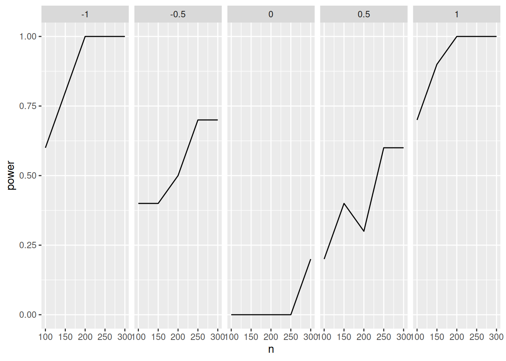
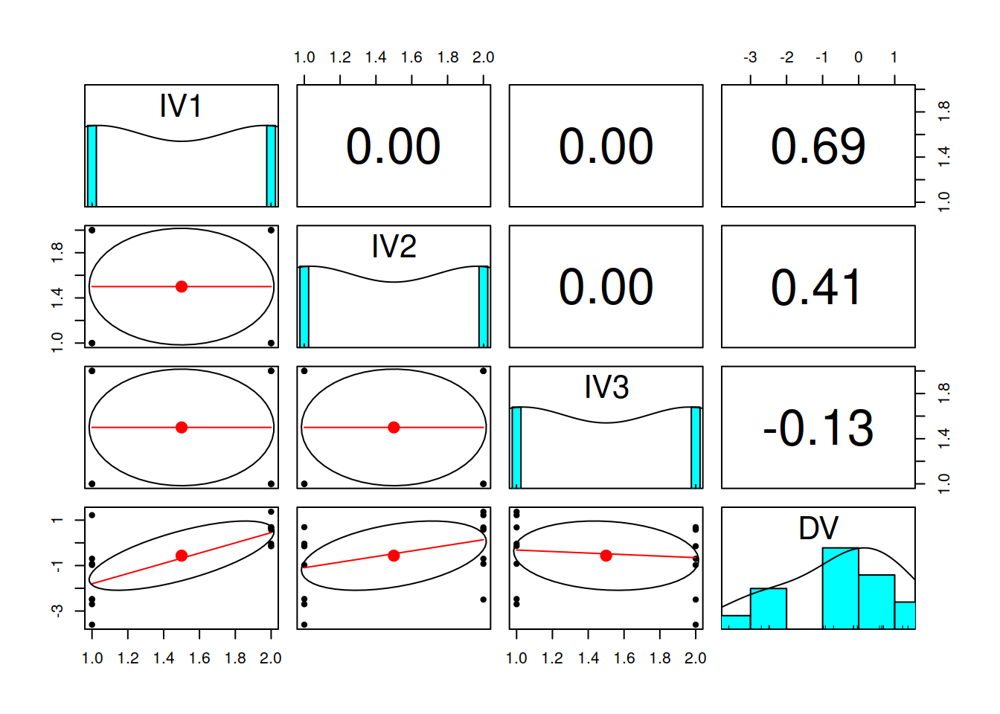

Show the Code
# ANYONE PAYING ATTENTION TO THE CODE?Patrick E. McKnight ![]()
Power - the probably of success in the frequentist world - gets attention mostly out of necessity. Many see power analyses as a hurdle to get funding while others treat it as privileged domain for the technically capable. Neither reality need be true in this brave new world. We plan to shed a different light on the topic by demonstrating power analysis by simulation. No, we are not using large language models to estimate power but we are using the power of randomization to generate data and, in turn, power estimates. You will learn that you too can do the very same with little to no technical knowledge. Come, learn, and later teach us after you perfect the techniques.
Estimating power can be challenging for most of us. Even the seasoned academic finds computing statistical power beyond reach. The concepts are simple enough but the complexities of either the software or the models leaves many to offload the work to more expert data analysts. Those analysts often rely on the same complex software to estimate complex models in the least intuitive manner. Here, we reintroduce the simple concepts of statistical power and then offer an alternative set of procedures that we hope leads more to assume control of their own data analyses.
After today, you will be able to answser (correctly) the following questions:
If you think you can answer each without much hesitation, sit back and enjoy the show; otherwise, sit up, grab your own computer, load this file, and get ready to learn!
# ANYONE PAYING ATTENTION TO THE CODE?REFRESHER
For those who might need a wee bit of a refresher on hypothesis testing, I recommend you visit our good ol’ friend Sal Kahn. He does a lovely job explaining the rudiments of null hypothesis significance testing (NHST) - certainly sufficient enough for this presentation. (38 mins of video and 3 practice sessions - FREE …as in beer)
Setup the R environment for the remainder of the talk. Be sure to install all these required libraries in your R environment.
library('paramtest')
library('pwr')
library('ggplot2')
library('ggthemes')
library('xkcd')
library('knitr')
library('nlme')
library('lavaan')
library('dplyr')
library('bslib') # the prime driver here for UI
library('simpr')
library('tidyverse')
library('shiny')Before we talk about power, we need to address null hypothesis significance testing (NHST). Why? Well, power is the probability of success in the NHST world and, really, only in that world. If you don’t understand that world then how can you understand power? You can’t. So, let’s dive into this NHST world first and then come back to power.
The world of social science statistics largely revolves around the same inferential approach. We have a theory (Dogs are superior to cats).
\[ Dog >> cat \]
That theory gets translated into an operation (Dog people are smarter than cat people).
\[ H: \bar{X}_{IQ|Dog} > \bar{X}_{IQ|cat} \]
That operation is what we hope to discover as the difference necessary to support our hypothesis that dogs are superior to cats. It wouldn’t matter what measure you collected, dogs would always outperform cats.
BUT we don’t test that difference directly. Instead, we test the null. What is the null you ask? The null is really the nil or, quite simply that there is no difference (Dog people are equal to cat people).
\[ H_0: \bar{X}_{Dog} = \bar{X}_{cat} \]
Now, why would we go to great lengths to make our tested difference (\(Dogs = cats\)) to be different from our expected difference (\(Dogs \gt cats\))? A good question beyond the reach of this presentation. Since we go through these machinations, let’s learn to live there for a moment so we can understand the nature of power in NHST. Also, at this point, I need to weigh in on my Bayesian class this spring (PSYC 757; register NOW). Given that we need to use this null with the common statistics, we ought to know where it fits into the whole hypothesis testing world. Here is where the beloved (or reviled) \(p-value\) comes into our story. The null hypothesis fits with the \(p-value\) here:
\[ \mbox{p-value} \equiv P(Result | H_0) \] or, for our running example with a fabricated difference between Dog and cat people:
\[ \mbox{p-value} = P(t = 2.23 | H_0) \]
and where…
\[ t = \frac{\bar{X}_1 - \bar{X}_2}{SE} =\frac{\bar{X}_{IQ|Dog} - \bar{X}_{IQ|cat}}{\sqrt{\frac{s_{ID|Dog}^2}{n_{Dog}} + \frac{s_{ID|cat}^2}{n_{cat}}}} = 2.23 \] Remember, I made up this result so all you cat lovers can just relax.
What does that \(\mbox{math speak}\) really mean and what values can we expect from each? Good questions.
\[ P(): \mbox{Probablity; range: 0 - 1} \]
\[ Result: \mbox{Statistic computed (mean difference); range: } -\infty - +\infty \] In the example above, we used the t-statistic to get an estimate of the result.
\[ H_0: \mbox{Null Hypothesis } (Dogs = cats) \]
Given the null (i.e., the hypothesis we usually are NOT interested in testing), what is the probability of getting these results? The reason we wish to know this probability is to rule out the null hypothesis. Many interpret this as “ruling out chance” but we do nothing of the sort. What we test is the inconsistency of our empirical results from the expected results of the null or no differences. When the inconsistency is large enough, we say that it differs “significantly” from the null and, as a result, we rule out the null. The truth of the matter is that we can never fully rule out the null nor can we accept the null. The evidence just needs to be inconsistent enough to cross the a pre-defined threshold (\(p_{crit} = .05\) or \(95\%\) confidence). In short, we need to expect those results to occur only 5% of the time given the null - a level of comfort known only to the farmers in rural England (c. 1920s). We scientists may have differing empirical comforts but those standards remain. Social scientists continue to use 95% confidence limits on most, if not all NHST models and effects.
But what are these results that I refer to above? The results come from data computations that convey either a difference between means (e.g., t-test, F-test, etc.) or an association (e.g., r, beta/b, etc.). For example, we might be interested in the mean difference between reported happiness for dog and cat lovers. Often, students find this part to be the hardest and, admittedly, it can be quite challenging. We must “operationalize” the mean difference into a scale that reflects the difference but also has a known shape. Why? Well, the difference is the part that we wish to test but we need to have a difference that can be communicated by a known shape because that shape allows us to estimate probabilities without much effort. In short, the shape makes the math easier.
We hope to have low probability estimates of our data to be consistent with the null. Why? We want results that are inconsistent with what we never hypothesized - the null. Frequently, we fail to get the desired result; thus, we fail to reject the null. Many areas within social science require statistical significance for publication. That requirement appears to be softening now but the road to scientific success in the frequentist world is paved with significant effects (i.e., ruling out the null). Failure to reject the null means more work and, more than likely, more failure. Those failures, however, are often quite predictable. They are predictable because most studies lack the statistical power. Yes, your failures to reject the null are almost entirely due to low statistical power. Wouldn’t it be nice to have a forecast for your success? I think so. How might we make such forecasts? By estimation.
The best way to guess your chances of success…er, rejecting the null, is to estimate statistical power. Estimating statistical power can be quite challenging - even for the seasoned data analyst. Most of us rely on standard methods to get point estimates or single values (presumably to be reported elsewhere). These point estimates come from stand-alone packages (e.g., G*Power, piface Java app), web pages (e.g., WebPower, PowerUpR, powerandsamplesize.com), or packages for statistical (R, SPSS) or general programming (python (pypi), numpy) languages. Regardless of the tool, the methods almost always rely on assumptions such as standard distributions, balanced designs, and perfect measurement (reliability \(=\) 1.0). These assumptions almost always work in our favor. We will arrive at values that are so otherworldly that nobody could honestly defend them. But, we do defend them. Not sure why but with the help of a little simulation, you will have other options. The bottom line, these assumptions may not help us estimate power well. To address this point, we need to know a bit about how power is actually calculated.
You are not the only beneficiary of studies with sufficient statistical power. Funding agencies, internal review boards (IRBs), journal editors/reviewers, and other groups responsible for the support of science demand that we justify our methods, measures, samples, and such. Most of that justification stems from years of failed research attempts to replicate, extend, or discover much due to small samples with poor measurement. Thus, there are many parties interested in the maximization of statistical power. Our collective resources get used more efficiently. If statistical power (at least a priori power estimates) levels are mandated prior to funding or publication, many of us will find ways to see large effects when none are present. We have what is termed a self-serving bias. No need to be defensive about that reflexive stance, we can learn to be more open to challenges to our hunches and estimates. Throughout the rest of the presentation, you will learn how to combat those biases and get better estimates of effect. Further, you may soon realize that statistical power is not just matter of getting more subjects. We need to explore the concept of power and the computations of said estimates before we can combat our inherent biases.
Power is actually quite simple and most people grasp the idea behind the term. In the rawest form, power is an estimate of a probability based upon MANY assumptions about the future. Proportionally, power directly relates to sample size and effect size. Larger samples result in greater power to detect an effect. Larger effects are easier to detect. Thus, the entirety of statistical power can be summed up by sample size and effect size. There are more finer details to understand as we unpack the world of statistical power.
We know the role of sample size to be self-evident from the LAW OF LARGE NUMBERS and hold that precision of estimate (reliability) is an essential ingredient to understanding both stability, and, in a not-so-subtle manner, validity of effect. Stability comes from precision. The greater the sample size, the more likely we are to get replicable estimates of the group (i.e., mean). Validity comes from the assumption in the law of large numbers and from inferential statistics (i.e., NHST) regarding the population parameter (i.e., reality). Larger samples help us gain precision of estimate for the population parameter. Thus, our inferences are such that larger samples give us more valid, population estimates. We shall return to this point later. For now, let us focus on the sample size as it pertains to reliability.
The second element to understanding statistical power is the effect size. My graduate advisor (Lee Sechrest) wrote a great piece on the variety of estimates that could be used to quantify effect sizes. Furthermore, he and his colleague Bill Yeaton (1981) argued that such measures of effect were almost entirely meaningless unless calibrated to some known standards (e.g., money, lives, etc.). Today, these measures of effect are mere guesses of terribly uncertain outcomes. We guess numbers without knowing much about how they may represent our future. The numerical guesses are almost always self-serving in that they allow us to have smaller samples (see above) as a trade-off for larger effects. We argue that the large expected effect is justifiable because some relevant literature or recent efforts provide a hint of a “large effect.” What we then do is assign a numerical value to that effect size to match the large effect. Here is the effect we are computing in most cases for power analysis:
\[ d = \frac{\bar{X_1} - \bar{X_2}}{s_p} = \frac{\mbox{Difference Between Groups}}{\mbox{Standard Deviation}} \] The effects expressed in Cohen’s d units are centered at zero (i.e., the mean effect equals zero or no effect at the center of the distribution) with each unit from the center equal to one standard deviation. In short, a z-score. Cohen’s d is a standardized measure of effect that is centered at zero but unbounded in both directions (positive or negative effects; thus, \(-\infty < d < \infty\)). Articles citing Gene Glass and Jacob Cohen (e.g., Sullivan & Feinn, 2012 - cited over 5000 times; see Tables 1 and 2) continued to stoke the flames of heuristics when assigning effect size estimates. They said:
The denominator standardizes the difference by transforming the absolute difference into standard deviation units. Cohen’s term d is an example of this type of effect size index. Cohen classified effect sizes as small (\(d = 0.2\)), medium (\(d = 0.5\)), and large (\(d \geq 0.8\)). According to Cohen, “a medium effect of .5 is visible to the naked eye of a careful observer. A small effect of .2 is noticeably smaller than medium but not so small as to be trivial. A large effect of .8 is the same distance above the medium as small is below it.” These designations large, medium, and small do not take into account other variables such as the accuracy of the assessment instrument and the diversity of the study population. However these ballpark categories provide a general guide that should also be informed by context.
The unfortunate effect of such heuristics is that most social scientists ignored the last part where these authors acknowledged the omission of so many relevant variables when assigning these values. Thus, failure to account for them leads most of us to find values in our favor and rely on the heuristics to justify them. We shall not succumb to such barbarism. Heuristics are to be challenged and recognized for what they are most often - a crutch to avoid thinking deeply about a problem. We now have the tools at our disposal to shake off these rough estimates and start thinking a bit deeper about estimating the chances of our own success. Wouldn’t that be nice? We need to calculate power.
One of the easiest ways to get into the methods of computation is to dig into the “guts” of the computer programs. Thankfully, R is an open-source programming language that ensures all contributions are both open and available to us - the users. So, I will take apart the easiest model - the t-test (pwr.t.test in library(pwr)) and expand upon other online explanations. In particular, I would highly recommend dariober’s excellent explanatory examples and code.
The essence of the code to compute statistical power for a two-tailed, two-sided alternative hypothesis is as follows (extracted from the pwr::pwr.t.test() function and simplified for the purposes of this presentation):
n <- 100 # sample size
ng <- 2 # number of groups
d <- .3 # effect size
sl <- .05 # significance level
nu <- (n - 1) * ng
qu <- qt(sl/2, nu, lower = FALSE)
ncp <- sqrt(n/ng) * d
df <- (n/ng) - 1
qu <- qt(sl/2, df, lower = FALSE)
ExpPower <- pt(qu, nu, ncp, lower = FALSE) +
pt(-qu, nu, ncp, lower = TRUE)A better way to show the simplicity is to create a dynamic object here that you can play with while you develop a level of numeracy few in the field possess:
Now that you have the hang of it. Let’s dive a little deeper into the details so you can be a bit more informed about which values to choose, when, and why. Here goes…
An effect is often expressed in the form of a non-centrality parameter or ncp. These parameters are just an adjustment we make to any measure of effect. Let’s inspect the math (sorry):
\[ ncp = \sqrt{N} * d \]
where…
\[ N \equiv \mbox{Our Realized Sample Size} \]
and where “realized” qualifies the sample size based upon the appropriate and effective sample. For independent sample t-test, the N depends on the individual group sizes, one sample and dependent sample t-tests have singular N values - the number of observations (most often); otherwise, N is the average sample size across groups. The software often selects the appropriate N for you leading us to make some wildly inaccurate guesses. Next is our computed effect (d).
\[ d \equiv \mbox{Our Estimated or Observed Effect Size} \]
More often than not, we use Cohen’s d (1988) because for most, it seems intuitive. Shortly, you will realize how counter-intuitive d really is in practice. But, to address d, we should look under the hood:
\[ d = \frac{\bar{X_1} - \bar{X_2}}{s_p} = \frac{\mbox{Difference Between Groups}}{\mbox{Standard Deviation}} \]
You have all seen this before as a z-score transform:
\[ z = \frac{x_i - \bar{X}}{s} \]
Instead of individual values, we just take the difference between two means \((\bar{X_1} - \bar{X_2})\) and divide by some special standard deviation \(s_p\). That special standard deviation is necessary when we have different variances and sample sizes by group (or by time if a dependent sample t-test).
Computing statistical power only involves a few decisions for N and d; the significance level (\(p < 0.05\)) gets set by others. If selecting only two values is all we really need to do, what is the big deal about this presentation? The point estimates are misleading and often give us an inaccurate probability of our own success. We move boldly into the unknown without the knowledge that a few more subjects placed in the right group with proper attention to treatment fidelity and measurement error will ensure our success. Ignorance is not bliss here - it is time and money. Let’s save some time and money by realizing the real problem.
We made all these estimates above with such confidence that I forgot to mention that we never know any of these values when planning our research. None of them. We guess. We guess in our favor; we guess with gusto; and we guess poorly more often than not. Why? Simply put, we invest too much time trying to get some point estimates of completely wild guesses. By busying ourselves with these micro-fine estimates, we forget that we guessed EVERY PART OF THE EQUATION. Think about the situation carefully before you reflexively disagree.
Consider Lehr’s “rule of thumb” estimate (Van Belle, 2008) for a two-sided t-test, 80% power, and a critical alpha level of .05 leads to:
\[ n = 16 \frac{s^2}{d^2} \] where \(n\) is the sample size necessary to achieve 80% power
THOUGHT EXERCISE
I plan a study to sample 200 undergraduates that will be randomly assigned to one of two groups. Each participant requires 15 minutes of research staff time to collect the data. Previous research indicates that the expected effect size for my “treatment” is about a 20 pt difference on a measure that ranges from 0 to 100. That measure, however, requires my research staff to spend over an hour per participant and we do not have the resources to spend. Thus, we use a shortened version of the measure that has a test-retest reliability of \(r_{xx} = .9\) and a correlation with the full scale of \(r = .8\). Given the differences in the measure, we assume that the 20 pt difference was about a standard deviation in previous studies. Even if the standard deviation were twice that value, we believe the expected effect would be about \(d = 0.5\) or a “medium” effect. Sound familiar?
Cohen was not correct in his qualitative assessment of effect size estimates. He was correct under very strict conditions of which few researchers today find themselves. Those qualitative anchors are no more valid today than when they were first published. Still, many of us rely on guesses that fall “within the range” of those qualitative anchors. We find ourselves, today, with a much more complex world where effect size estimates are greatly affected by sampling, measurement, and treatment fidelity. Few of us anticipate how these factors may affect our results; we are quick to notice how they may affect other researcher’s work. Again, self-serving biases affect us all.
If point estimates are not the answer to our statistical power estimate problems then what is the magic elixir? There are none. With some proper guidance, you can setup a simulation to model your expected results. Once modeled, you can adjust the settings to accommodate “best” and “worst” case scenarios.
Simulation requires a little knowledge of the models you wish to run. I will start with a basic model (independent sample t-test), and move to more complicated models (linear mixed effects or lmer models) quite rapidly via regression and ANOVA models. To make the transition easier, I plan to walk very slowly through some of the rudiments of simulation. First, we start with sampling and move from univariate samples to multivariate samples. You do not need a strong background in R or Python to follow along. The code is available on my repository. Please help yourself to my code but please acknowledge the source.
The standardized normal scale is our mostly widely used option along with the t, F, and chi-square distributions. Psychological scientists mostly use a t or F distribution, and, for the purposes of this presentation, we restrict our discussion to only those distributions. As you will soon learn, it doesn’t matter what scale we use to quantify the results. As long as we have a critical value to assess what might be “inconsistent with the null.” The t and F distributions are the standard statistical distributions in our commonly-used inferential procedures (e.g., ANOVA, regression, etc.).
Most of you may recall, the standard normal distribution allows z-scores to be compared to either zero (i.e., an implied, one-sample comparison) or another mean. The z-test was popular prior to William Gossett.
REFRESHER
For those readers less familiar about the role Gosset played in the development of the t-statistic, I suggest you watch this brief video that provides a nice overview.
Simulation requires some numeracy. The applets above provide you with some relatively high level control over the computation of statistical power. We can change the means, standard deviations, and such to some effect; the real challenge is to model your data in such a way to best understand what makes a difference and how it makes a difference. I begin your journey toward numeracy with two simple applications.
Let’s look at the raw means and how that may relate to the t-test statistic:
library(simpr)
#set.seed(100)
simpr_tidy = ## Specify the simulation
specify(x1 = ~ 2 + rnorm(n),
x2 = ~ 3 + 2*x1 + rnorm(n, 0, sd = 0.5),
y = ~ 5 + x1 + x2 + g1*x1*x2 + 10 * rnorm(n)) %>%
## Define varying parameters: here, sample size and effect size
define(n = seq(100, 300, by = 50),
g1 = seq(-1, 1, by = 0.5)) %>%
## Generate 10 repetitions
generate(10) %>%
## Fit models
fit(lm = ~lm(y ~ x1*x2))%>%
## Tidy each simulation using broom::tidy and
## bind together
tidy_fits
simpr_tidy# A tibble: 1,000 × 10
.sim_id n g1 rep Source term estimate std.error statistic p.value
<int> <dbl> <dbl> <int> <chr> <chr> <dbl> <dbl> <dbl> <dbl>
1 1 100 -1 1 lm (Inter… 11.0 8.24 1.33 1.87e-1
2 1 100 -1 1 lm x1 11.0 4.51 2.44 1.67e-2
3 1 100 -1 1 lm x2 -1.24 2.21 -0.562 5.75e-1
4 1 100 -1 1 lm x1:x2 -1.53 0.307 -4.99 2.69e-6
5 2 150 -1 1 lm (Inter… -1.17 5.72 -0.204 8.38e-1
6 2 150 -1 1 lm x1 3.13 3.85 0.812 4.18e-1
7 2 150 -1 1 lm x2 2.26 1.67 1.36 1.77e-1
8 2 150 -1 1 lm x1:x2 -1.38 0.254 -5.42 2.40e-7
9 3 200 -1 1 lm (Inter… 5.98 5.37 1.11 2.67e-1
10 3 200 -1 1 lm x1 -2.12 3.28 -0.648 5.18e-1
# ℹ 990 more rowslibrary(dplyr)
condition_power = simpr_tidy %>%
filter(term %in% "x1:x2") %>%
group_by(n, g1) %>%
summarize(power = mean(p.value < 0.05)) `summarise()` has grouped output by 'n'. You can override using the `.groups`
argument.condition_power# A tibble: 25 × 3
# Groups: n [5]
n g1 power
<dbl> <dbl> <dbl>
1 100 -1 0.6
2 100 -0.5 0.4
3 100 0 0
4 100 0.5 0.2
5 100 1 0.7
6 150 -1 0.8
7 150 -0.5 0.4
8 150 0 0
9 150 0.5 0.4
10 150 1 0.9
11 200 -1 1
12 200 -0.5 0.5
13 200 0 0
14 200 0.5 0.3
15 200 1 1
16 250 -1 1
17 250 -0.5 0.7
18 250 0 0
19 250 0.5 0.6
20 250 1 1
21 300 -1 1
22 300 -0.5 0.7
23 300 0 0.2
24 300 0.5 0.6
25 300 1 1 library(ggplot2)
condition_power %>%
ggplot(aes(n, power)) +
geom_line() +
facet_grid(~g1)
library(psych)
Attaching package: 'psych'The following object is masked from 'package:lavaan':
cor2covThe following objects are masked from 'package:ggplot2':
%+%, alphadata.df <- sim.anova(es1=1,es2=.5,es13=1) # one main effect and one interaction
describe(data.df) vars n mean sd median trimmed mad min max range skew kurtosis se
IV1* 1 16 1.50 0.52 1.50 1.50 0.74 1.0 2.00 1.00 0.00 -2.12 0.13
IV2* 2 16 1.50 0.52 1.50 1.50 0.74 1.0 2.00 1.00 0.00 -2.12 0.13
IV3* 3 16 1.50 0.52 1.50 1.50 0.74 1.0 2.00 1.00 0.00 -2.12 0.13
DV 4 16 -0.56 1.52 -0.14 -0.48 1.23 -3.6 1.37 4.97 -0.56 -1.08 0.38pairs.panels(data.df) #show how the design variables are orthogonal
#
summary(lm(DV~IV1*IV2*IV3,data=data.df))
Call:
lm(formula = DV ~ IV1 * IV2 * IV3, data = data.df)
Residuals:
Min 1Q Median 3Q Max
-1.3127 -0.3635 0.0000 0.3635 1.3127
Coefficients:
Estimate Std. Error t value Pr(>|t|)
(Intercept) -2.58573 0.70607 -3.662 0.00638 **
IV11 2.49781 0.99853 2.501 0.03686 *
IV21 2.73403 0.99853 2.738 0.02553 *
IV31 0.29791 0.99853 0.298 0.77304
IV11:IV21 -1.62291 1.41213 -1.149 0.28364
IV11:IV31 0.06105 1.41213 0.043 0.96658
IV21:IV31 -2.04374 1.41213 -1.447 0.18584
IV11:IV21:IV31 1.26742 1.99705 0.635 0.54338
---
Signif. codes: 0 '***' 0.001 '**' 0.01 '*' 0.05 '.' 0.1 ' ' 1
Residual standard error: 0.9985 on 8 degrees of freedom
Multiple R-squared: 0.7712, Adjusted R-squared: 0.5711
F-statistic: 3.853 on 7 and 8 DF, p-value: 0.03891summary(aov(DV~IV1*IV2*IV3,data=data.df)) Df Sum Sq Mean Sq F value Pr(>F)
IV1 1 16.544 16.544 16.593 0.00357 **
IV2 1 5.930 5.930 5.947 0.04065 *
IV3 1 0.567 0.567 0.569 0.47231
IV1:IV2 1 0.979 0.979 0.981 0.35086
IV1:IV3 1 0.483 0.483 0.484 0.50627
IV2:IV3 1 1.988 1.988 1.994 0.19561
IV1:IV2:IV3 1 0.402 0.402 0.403 0.54338
Residuals 8 7.976 0.997
---
Signif. codes: 0 '***' 0.001 '**' 0.01 '*' 0.05 '.' 0.1 ' ' 1set.seed(42)
#demonstrate the effect of not centering the data on the regression
data.df <- sim.anova(es1=1,es2=.5,es13=1,center=FALSE) #
describe(data.df) vars n mean sd median trimmed mad min max range skew kurtosis se
IV1* 1 16 1.50 0.52 1.5 1.50 0.74 1.00 2.00 1.0 0.00 -2.12 0.13
IV2* 2 16 1.50 0.52 1.5 1.50 0.74 1.00 2.00 1.0 0.00 -2.12 0.13
IV3* 3 16 1.50 0.52 1.5 1.50 0.74 1.00 2.00 1.0 0.00 -2.12 0.13
DV 4 16 0.49 1.85 1.0 0.62 1.63 -3.78 3.03 6.8 -0.67 -0.45 0.46#
#this one is incorrect, because the IVs are not centered
summary(lm(DV~IV1*IV2*IV3,data=data.df))
Call:
lm(formula = DV ~ IV1 * IV2 * IV3, data = data.df)
Residuals:
Min 1Q Median 3Q Max
-0.8966 -0.3917 0.0000 0.3917 0.8966
Coefficients:
Estimate Std. Error t value Pr(>|t|)
(Intercept) 1.1798 0.5803 2.033 0.076503 .
IV11 -1.9469 0.8207 -2.372 0.045093 *
IV21 0.1076 0.8207 0.131 0.898974
IV31 -4.0620 0.8207 -4.949 0.001122 **
IV11:IV21 2.6342 1.1607 2.269 0.052933 .
IV11:IV31 6.0582 1.1607 5.220 0.000803 ***
IV21:IV31 2.0421 1.1607 1.759 0.116556
IV11:IV21:IV31 -3.3524 1.6415 -2.042 0.075397 .
---
Signif. codes: 0 '***' 0.001 '**' 0.01 '*' 0.05 '.' 0.1 ' ' 1
Residual standard error: 0.8207 on 8 degrees of freedom
Multiple R-squared: 0.8952, Adjusted R-squared: 0.8035
F-statistic: 9.764 on 7 and 8 DF, p-value: 0.002274summary(aov(DV~IV1*IV2*IV3,data=data.df)) #compare with the lm model Df Sum Sq Mean Sq F value Pr(>F)
IV1 1 9.749 9.749 14.473 0.005204 **
IV2 1 10.337 10.337 15.346 0.004435 **
IV3 1 2.890 2.890 4.290 0.072097 .
IV1:IV2 1 0.918 0.918 1.362 0.276751
IV1:IV3 1 19.202 19.202 28.507 0.000695 ***
IV2:IV3 1 0.134 0.134 0.199 0.667572
IV1:IV2:IV3 1 2.810 2.810 4.171 0.075397 .
Residuals 8 5.389 0.674
---
Signif. codes: 0 '***' 0.001 '**' 0.01 '*' 0.05 '.' 0.1 ' ' 1#now examine multiple levels and quadratic terms
set.seed(42)
data.df <- sim.anova(es1=1,es13=1,n2=3,n3=4,es22=1)
summary(lm(DV~IV1*IV2*IV3,data=data.df))
Call:
lm(formula = DV ~ IV1 * IV2 * IV3, data = data.df)
Residuals:
Min 1Q Median 3Q Max
-2.0018 -0.3397 0.0000 0.3397 2.0018
Coefficients:
Estimate Std. Error t value Pr(>|t|)
(Intercept) 3.4260 0.7844 4.367 0.000207 ***
IV11 -2.7790 1.1093 -2.505 0.019434 *
IV20 -3.0489 1.1093 -2.748 0.011190 *
IV21 -1.2009 1.1093 -1.083 0.289778
IV3-1 -1.5254 1.1093 -1.375 0.181825
IV31 -4.4713 1.1093 -4.031 0.000488 ***
IV33 -5.1016 1.1093 -4.599 0.000115 ***
IV11:IV20 1.5126 1.5689 0.964 0.344596
IV11:IV21 1.3254 1.5689 0.845 0.406549
IV11:IV3-1 3.2038 1.5689 2.042 0.052272 .
IV11:IV31 6.1556 1.5689 3.924 0.000639 ***
IV11:IV33 8.5233 1.5689 5.433 1.4e-05 ***
IV20:IV3-1 2.1234 1.5689 1.353 0.188512
IV21:IV3-1 1.1223 1.5689 0.715 0.481280
IV20:IV31 1.3930 1.5689 0.888 0.383389
IV21:IV31 2.2484 1.5689 1.433 0.164711
IV20:IV33 1.5838 1.5689 1.010 0.322782
IV21:IV33 1.5504 1.5689 0.988 0.332899
IV11:IV20:IV3-1 -2.6968 2.2187 -1.215 0.236008
IV11:IV21:IV3-1 -1.2671 2.2187 -0.571 0.573237
IV11:IV20:IV31 -0.4246 2.2187 -0.191 0.849846
IV11:IV21:IV31 -3.3169 2.2187 -1.495 0.147959
IV11:IV20:IV33 -2.4872 2.2187 -1.121 0.273368
IV11:IV21:IV33 -0.6422 2.2187 -0.289 0.774713
---
Signif. codes: 0 '***' 0.001 '**' 0.01 '*' 0.05 '.' 0.1 ' ' 1
Residual standard error: 1.109 on 24 degrees of freedom
Multiple R-squared: 0.8651, Adjusted R-squared: 0.7359
F-statistic: 6.693 on 23 and 24 DF, p-value: 8.495e-06summary(aov(DV~IV1*IV2*IV3,data=data.df)) Df Sum Sq Mean Sq F value Pr(>F)
IV1 1 36.11 36.11 29.346 1.45e-05 ***
IV2 2 32.23 16.12 13.096 0.000143 ***
IV3 3 10.76 3.59 2.914 0.054955 .
IV1:IV2 2 0.03 0.01 0.011 0.988728
IV1:IV3 3 98.02 32.67 26.549 8.49e-08 ***
IV2:IV3 6 3.71 0.62 0.502 0.800543
IV1:IV2:IV3 6 8.58 1.43 1.162 0.358682
Residuals 24 29.54 1.23
---
Signif. codes: 0 '***' 0.001 '**' 0.01 '*' 0.05 '.' 0.1 ' ' 1pairs.panels(data.df)#
data.df <- sim.anova(es1=1,es2=-.5,within=c(-1,0,1),n=10)
pairs.panels(data.df)library(designr)
library(lme4)Loading required package: Matrix
Attaching package: 'Matrix'The following objects are masked from 'package:tidyr':
expand, pack, unpackThe following object is masked from 'package:simpr':
expand
Attaching package: 'lme4'The following object is masked from 'package:nlme':
lmListlibrary(lmerTest)
Attaching package: 'lmerTest'The following object is masked from 'package:lme4':
lmerThe following object is masked from 'package:stats':
stepdesign <-
fixed.factor("X", levels=c("X1", "X2")) +
random.factor("Subj", instances=30)
dat <- design.codes(design)
contrasts(dat$X) <- c(-1, +1)
dat$ysim <- simLMM(formula = ~ 1 + X + (1 + X | Subj),
data = dat,
Fixef = c(200, 10),
VC_sd = list(c(30,10), 50),
CP = 0.3,
empirical = TRUE)Data simulation from a linear mixed-effects model (LMM)
Formula: gaussian ~ 1 + X1 + ( 1 + X1 | Subj )
empirical = TRUE
Random effects:
Groups Name Std.Dev. Corr
Subj (Intercept) 30.0
X1 10.0 0.30
Residual 50.0
Number of obs: 60, groups: Subj, 30
Fixed effects:
(Intercept) X1
200 10 dat$Xn <- ifelse(dat$X=="X1",-1,1)
out <- lme4::lmer(ysim ~ Xn + (Xn || Subj),
data=dat,
control=lmerControl(calc.derivs=FALSE))
summary(out)Linear mixed model fit by REML ['lmerMod']
Formula: ysim ~ Xn + ((1 | Subj) + (0 + Xn | Subj))
Data: dat
Control: lmerControl(calc.derivs = FALSE)
REML criterion at convergence: 634.5
Scaled residuals:
Min 1Q Median 3Q Max
-1.74175 -0.61132 -0.07791 0.55742 1.70515
Random effects:
Groups Name Variance Std.Dev.
Subj (Intercept) 1584.75 39.809
Subj.1 Xn 91.49 9.565
Residual 1556.32 39.450
Number of obs: 60, groups: Subj, 30
Fixed effects:
Estimate Std. Error t value
(Intercept) 200.000 8.875 22.535
Xn 10.000 5.384 1.857
Correlation of Fixed Effects:
(Intr)
Xn 0.000 See this fine package (longpower)
#library(longpower)
#vignette(longpower)